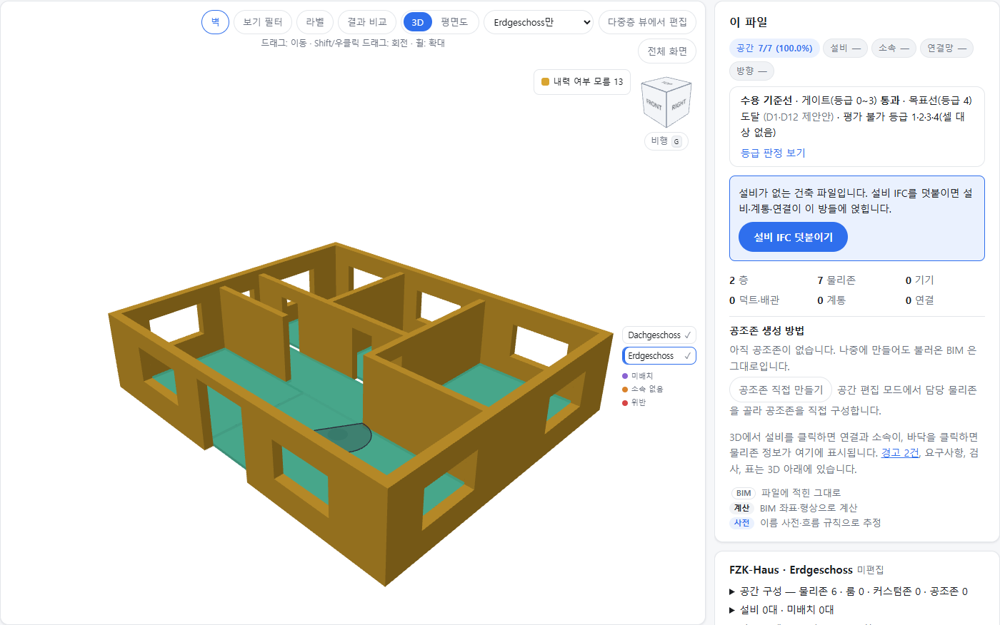
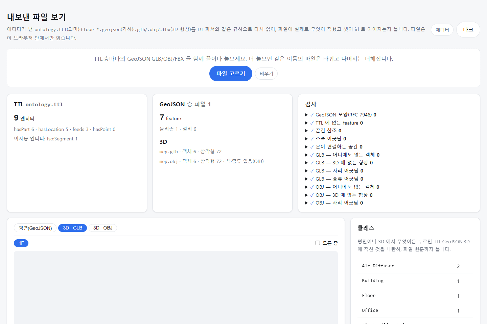

이번 보고의 성과는 에디터 전체의 완성도가 아니라, IFC를 읽고 결과를 내보내는 핵심 경로의 구현입니다.
최신 main에서 임포트·내보내기·출력 파일 재열기까지 직접 확인했습니다.
IFC의 건물 형상을 화면에 구현하고,
DT가 활용할 파일로 변환합니다.
편집 기반은 갖췄지만 세부 기능·사용성의
고도화와 DT 운영 환경의 통합 검증은 계속 필요합니다.
정밀한 공간·설비 편집과 쉬운 작업 흐름,
고객사 데이터 검증을 보강합니다.
자동 구축과 운영 편집을 하나의 흐름으로 연결해, 디지털 트윈의 공간·설비 데이터를 유지하는 것이 전체 컨셉입니다.
BIM(IFC)에서 시작해 형상·데이터를 만들고 내보내는 경로입니다.
운영 중 바뀐 공간·설비를 더 정확하고 쉽게 고칠 수 있도록 편집 기능과 사용성을 높입니다.
앞 장의 플랫폼 컨셉을 입력·산출물·활용처로 구체화했습니다. 이번에 확인한 경로는 BIM(IFC) 임포트와 DT용 파일 출력입니다.
Zone 4,016 · 실내기 3,028)에는 좌표가 하나도 없다. 이 도구가 그 빠진 절반(공간·좌표)을 만들고, 리모델링 때 3D·공간 계층·설비 소속·관제 화면이 서로 어긋나지 않게 한 번에 고친다.
플랫폼의 전체 기능 구성입니다. 항목 수는 요구사항의 규모이며, 각 기능의 구현 완료율을 뜻하지 않습니다.
IFC 를 읽어 층·방·벽·문·설비·계통 생성, 건축+설비 파일 합치기, 판본 비교
R0~R26 보고서, 고객사용 IDS 검사 파일, 등급 0~5 칩, 문제 항목을 CSV·BCF로 전달
R1: 공조존 수동 생성·경계 수정·검증 · R2: IDF 로 공조존·담당 설비 자동 구축
BIM 없는 사이트 — 배경 위에 방·설비를 그림
공간·관계 데이터와 3D(GLB·OBJ·FBX) 내보내기, DT 호환·결과 보고
물리존·룸·벽·문·창·커스텀존 생성·분할·병합, 내력벽 잠금, 겹침 차단
설비 이동·추가·삭제, 설치면(바닥/벽/천장) 판정, 옮기면 소속 방 자동 재판정
연결 잇기·끊기, 흐름 방향, 계통 이름 규칙
권한·층 잠금·임시 저장·미리보기·반영·버전·되돌리기·편집 이력
층을 넘는 샤프트·계단, 외벽 에디터, 로봇 통과 속성
자동 생성의 허용 기준은 누적 등급 0~3이며, 등급 4는 흐름 방향의 보완 목표입니다. D1 기준 승인과 고객사 BIM별 적용 검증은 남아 있습니다.
| 등급 | 온톨로지에 더해지는 것 | DT 에서 되는 것 | BIM 에 필요한 것 |
|---|---|---|---|
| 0 | 층 · 방 외곽선 · 벽·문·창 | 3D 지도 · 층·방 목록 | 건축 BIM, 길이 단위, 원점 (R0~R4·R6·R7) |
| 0+ | 방 종류, 문으로 이어진 방-방 | "회의실" 검색 · 로봇 경로 | 방 분류 코드 · 공간 경계 (R14·R5 권장) |
| 1 | 설비와 좌표 | 3D 에 설비 표시 | 설비(MEP) BIM (R9·R11) |
| 2 | 설비가 어느 방에 있는지 (계산) | 이상 알림의 발생 위치 · 층·방별 설비 목록 | 건축·설비가 같은 좌표·층 이름 (R12·R1) |
| 3 ★ | 같은 계통·배관에 이어진 설비 | 계통별 보기 | 계통 정보, 맞닿게 그린 설비 (R16·R15, 10/8 필수로 승격) → 생성 허용 |
| 4·4+ | 공조기 → 토출구 흐름 방향, 담당 공간 | 담당 설비 추적 · 상류/하류 · 계통도 담당 공간 | 포트 흐름 방향 (R17) 또는 사람이 확정한 규칙 방향 (확정 방향 ≥ 50% 가 목표선) |
| 5 | 공조존 · 관제점 | 계통도 완성 · 실시간 값 | BIM 밖 — IDF · BAS |
허용 기준: 외곽선 ≥ 85%·층 이름 100% · 배치점 ≥ 90% · 소속 ≥ 85% · 계통 소속 ≥ 60%. BIM 원본+계산과 사전·사용자 보정을 구분합니다(D12). 성수 수치는 기존 실측 근거이며 오늘 재측정한 값이 아닙니다.
최신 main에서 공개 건축 IFC를 열어 다시 촬영했습니다. 별도 3D 모델을 만들어 넣은 화면이 아닙니다.

AC20-FZK-Haus.ifc
공개 건축 BIM 샘플
2개 층 · 7개 공간
벽·문·창과 공간 형상
설비 IFC가 있으면 덧붙여
위치·소속·연결을 확인합니다.
검증용 설비 IFC에서도 임포트→내보내기→재열기를 실행했습니다. 객체 ID·위치·관계 연결 검사 결과를 확인했습니다.

TTL 엔티티 9개
공간 계층·설비 소속·공급 관계
GeoJSON 항목 7개
GLB·OBJ 객체 각각 6개
12개 검사 항목 · 오류 0
검증용 mep.ifc · 고객사 BIM 아님
빈 곳은 파일 작성 습관에서 옴 — 외곽선 없는 방 55 · 기본 이름 "공간" 42 · 어느 벽인지 없는 문·창 137 · 방을 안 그린 공용부의 기기 571. "설비가 있는 방" 84% 는 외벽 루버 포함, 빼면 87.9%(등급 2 지표). 10/6 측정값이고 방 종류만 10/12 사전 보강(영문 방 이름 4개)으로 31 → 33%.
| 항목 | 값 | 무엇과 |
|---|---|---|
| 설비가 있는 방 (계산) | 95.8% · 97.4% 성수 94.5% | BIM 에 적힌 방 — Duplex 167 · 병원 2,216 · 성수 976/1,033 |
| 연결 추정 (형상) | 정밀 79.5% 재현 75.8% | 포트가 완전한 ifc4Mep 1,974건 |
| 규칙 방향 (사전) | 83.8 · 88.9 · 99.35% | 포트에 적힌 방향 (성수 · ifc4Mep · 병원) |
실측 BIM 기준값(가진 BIM 5종) 아래로 떨어지면 실패. 요구사항 문서와 기능표·개발 항목의 일치 여부도 검사(prd.test.ts). 10/13 집계에서는 기능 단위 시험만 실행했습니다. 화면·실측 시험은 성수 파일이 없어 등록 수를 집계했습니다. 요구 기준 96개는 부분 검증 상태입니다.
기획 확정과 개발 완료를 구분합니다. 수치는 10/14 main·관리표 조회 기준이며, 실제 동작 범위는 앞 장의 화면·파일 확인으로 판단합니다.
R1 220건 · R2 31건
E14 22건 · E15 6건 모두 기획 확정
완료 144 · 진행·검토 4
미완료 71 · 미매핑 1
미완료는 실제 미구현 수와 다를 수 있습니다.
| 관리표 분류 | 건수 | 읽는 법 |
|---|---|---|
| 완료 | 144 | 관리표에서 완료로 등록 |
| 진행·검토 | 4 | 개발 중 1 + 검토 중 3 |
| 개발 대기 | 56 | 구현·검증·상태 대조 필요 |
| 상태 정리 필요 | 15 | 최신 PRD는 확정, 관리표 표시는 미갱신 |
| 미매핑 | 1 | OE-UI-15 연결 확인 필요 |
| R2 | 31 | 후속 릴리즈 범위 |
prd-done은 기획 확정 상태입니다. 관리표상 “기획 중” 15건을 실제 기획 미확정으로 읽지 않습니다. R2 31건은 별도 범위입니다.
막대는 관리표 상태 분포입니다. 저장·반영 등의 동작 기반은 있지만, 관리 상태만으로 전체 기능의 완성을 단정하지 않습니다.
| 대표 기능 | 세부 항목의 관리표 상태 | 완료 / 전체 |
|---|---|---|
| 1. BIM 임포트·검토 | 16171 | 16 / 25 |
| 2. BIM 품질·등급 판정 | 52 | 5 / 7 |
| 3. 공조 구역·IDF | 4117 | 4 / 22 |
| 4. 수동 구축 | 51 | 5 / 6 |
| 5. 온톨로지 생성·DT 연동 | 13191 | 13 / 24 |
| 6. 공간 편집 | 312 | 31 / 33 |
| 7. 설비 배치·소속 재판정 | 221 | 22 / 23 |
| 8. 배관·설비 연결 | 13122 | 13 / 18 |
| 9. 저장·검토·변경 반영 | 5325 | 5 / 42 |
| 10. 다중층·외벽·로봇 | 16912 | 16 / 28 |
10개 기능 228건 + 화면·확장 기반 23건 = 251건. R2는 회색으로 분리했습니다. E14·E15는 기획 확정 상태이며, 저장·검토·반영의 기반 구현과 세부 수용 기준 검증을 나눠 봅니다.
모든 묶음의 PRD 기획은 확정됐습니다. 아래 막대와 완료 건수는 별도로 조회한 개발 관리표이며, 현행 코드·검증 결과와 상태 대조가 필요합니다.
E14 저장·검토·반영 22건, E15 동기화·반영 결과 6건, E19 이력 6건 모두 기획 확정입니다. 관리표의 대기·미갱신 표시는 “기능이 전혀 없다”는 의미가 아닙니다.
“내보내기가 가능하다”와 “모든 편집 요구가 완성됐다”를 구분해 설명합니다.
| 영역 | 현재 판단 | 근거와 다음 과제 |
|---|---|---|
| IFC 읽기·3D 표시 | 동작 확인 | 최신 main에서 공개 건축 IFC의 실제 형상을 표시했습니다. |
| 온톨로지·형상 출력 | 동작 확인 | GeoJSON·TTL·GLB·OBJ 생성과 별도 뷰어 재열기를 확인했습니다. |
| 공간·설비 편집 | 기반 구현 · 고도화 중 | 이름·경계·배치·연결 편집이 있으며, 정밀 조작과 큰 파일 사용성을 보강합니다. |
| 저장·검토·변경 반영 | 기반 구현 · 검증 보강 | 임시 저장·미리보기·버전·반영 흐름은 구현됐습니다. 기획 확정과 전체 구현 완료는 구분합니다. |
| DT 운영 환경 적용 | 통합 검증 필요 | 실제 DT 등록·관제 데이터·버전 적용까지의 운영 흐름을 함께 검증해야 합니다. |
이번 성과: IFC에서 DT용 데이터를 만드는 초석을 마련했습니다. 다음 성과: 편집·반영 작업을 더 안정적이고 쉽게 만들겠습니다.
IFC→DT 데이터 경로를 바탕으로, 사람이 보완해야 하는 작업을 더 정확하고 쉽게 만들겠습니다.
공간 경계·벽·문·설비를 정확히 수정
층간 편집과 소속·연결 일관성 보강
저장·미리보기·반영·복구 검증
단계·용어·화면 흐름을 더 쉽게 정리
선택·이동·스냅·치수 조작 개선
큰 모델의 반응 속도·표시 개선
추가 고객사 BIM으로 적용성 검증
DT 운영 환경에서 출력·반영 검증
R2에서 IDF 자동 구축 등 확장
고도화의 목적은 IFC에서 만든 데이터를 현장 담당자가 더 정확하고 쉽게 고치게 하는 것입니다. 세부 일정과 기능별 범위는 다음 두 장에서 설명합니다.
기획 정의는 9/28~10/14에 정리·확정했습니다. BIM 임포트·온톨로지 생성은 W41~W43, 공간·설비 편집 보강은 W44~W46에 진행합니다.
경계·배치·연결과 다중층 편집의 정확도·완성도를 높입니다.
작업 흐름을 쉽게 다듬고, 화면 구성과 시각 디자인을 고도화합니다.
10개 기능의 릴리즈별 범위입니다. 최신 main의 R2는 31건이며, 공통 사용성 개선과 R1 검증 결과에 따른 보강 항목이 더해집니다.
| 대표 기능 | R1 (2026.10) — 여기까지 만든다 | R2 (~2027.1) — 이걸 보강한다 |
|---|---|---|
| 1. BIM 임포트·검토 | IFC 임포트, 건축+설비 합치기, 판본 비교, 검토 화면 | gbXML 임포트 · IDF·gbXML 경로의 검토 화면 IDF-15 · BIM-15 |
| 2. 요구사항·등급 | R0~R26 보고서, IDS 검사 파일, 등급 0~5·게이트(0~3) | 고객사 BIM 추가 확보 후 기준선 재측정·보고서 문구 보강 +α |
| 3. 공조존 · IDF | 공조존 도구로 수동 생성·경계 수정·검증 | IDF 로 공조존·담당 설비 자동 구축 — 존↔공간 대응 관계 확인, 재임포트, 플랜트 계통 E04 15 · ZON-03/07 |
| 4. 수동 구축 | 평면도 이미지 배경, 방·설비·공조존 수동 작성 | BIM·IDF 없는 사이트를 3D 스캔 모델 배경으로 수동 구축 MAN-01 |
| 5. 온톨로지·DT 연동 | GeoJSON+TTL·3D 내보내기, 생성·결과 리포트 (① 파일 교환) | D-INT 가 API·공유 DB 로 정해지면 연동 방식 확장 +α |
| 6. 공간 편집 | 물리존·룸·벽·문·창 생성·분할·병합, 내력벽 잠금, 겹침 차단 | 스냅 등 정밀 조작 — 아래 공통 개선 항목 UI-06 |
| 7. 설비 배치·소속 재판정 | 이동·추가·삭제, 설치면 판정, 소속 방 자동 재판정 | 공조 커버리지 분석 — 부하 변화 추정·공백·불균형 경고·최적안 제안 P3-05~07 |
| 8. 배관·계통 | 잇기·끊기, 흐름 방향, 계통 이름 규칙 | 규칙 방향의 알려진 오류 보정 · 환수·급탕 원천 규칙 PIP-16/17 |
| 9. 저장·검토·변경 반영 | 임시 저장·미리보기·반영·버전·되돌리기·이력 | 임시 저장 후 잠금 해제(WF-05) · 공통 권한 체계 · 층 단위 잠금·해제 등 |
| 10. 다중층·외벽·로봇 | 샤프트·계단, 외벽 에디터, 로봇 통과 속성 | 로봇 1인칭 시점 뷰 · 표시 규격 ROB-01/02 |
등급 0~3을 모두 통과한 BIM만 자동 구축을 허용하는 안의 승인을 요청드립니다(계통 소속 기기 ≥ 60%). 흐름 방향은 등급 4의 보완 목표입니다(확정 방향 ≥ 50%, 미달 시 경고). 판정은 BIM 원본+계산만으로 하고, 사전 보정은 별도 표시합니다(D12, 성수 계통 종류 97%). 성수의 계통 소속은 60%로 경계값입니다. R15·R16 필수화와 고객사 제출 요구(R0~R26)·보고서 문구가 이 결정에 달려 있습니다.
IFC에서 내보낸 형상·좌표·관계 파일을 실제 DT 운영 흐름에 적용해 확인할 수 있도록 환경과 협업 지원을 요청드립니다. D-INT는 10/14에 기술 선택을 개발 구현에 맡기기로 결정됐으며, 추가 승인 대기 사항이 아닙니다.
성수 외 고객사의 BIM도 확보해 주십시오. 현재 BIM 5종으로 정확도 하한선을 확인하고 있습니다. 특정 파일에만 잘 맞는 결과를 피하려면, 작성 도구와 판본이 다른 실제 데이터로 검증을 넓혀야 합니다.